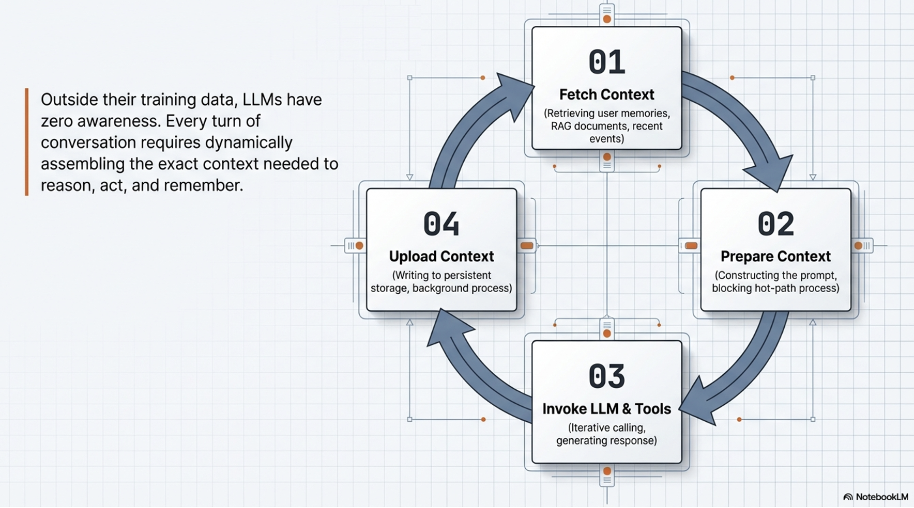
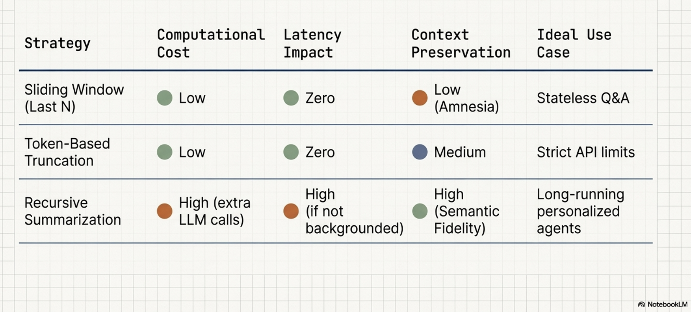
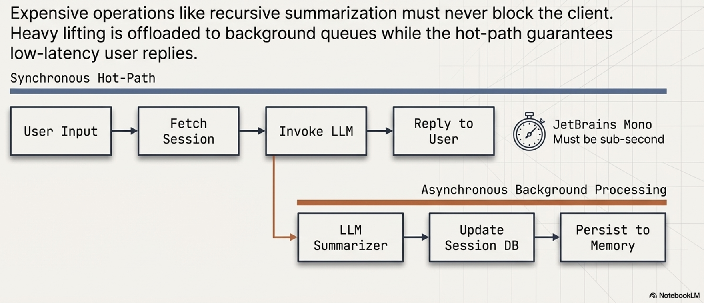
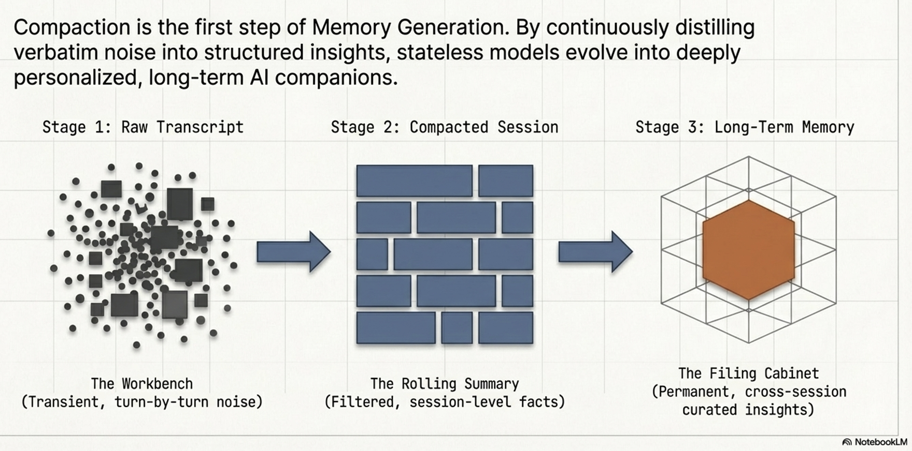
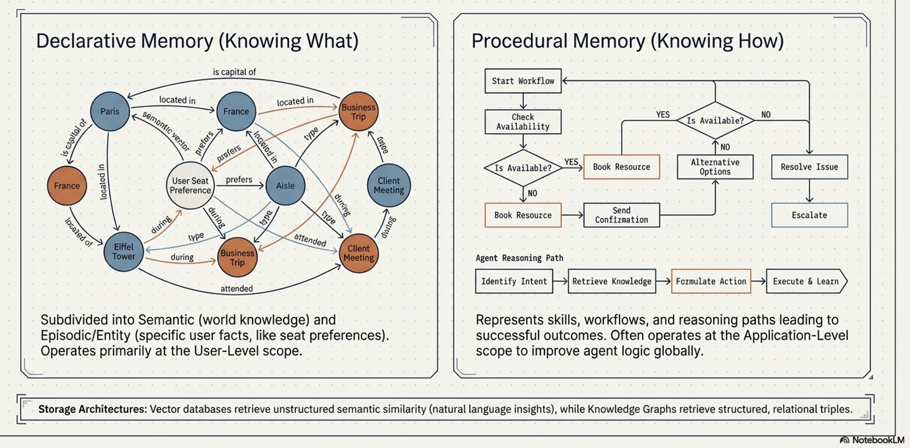
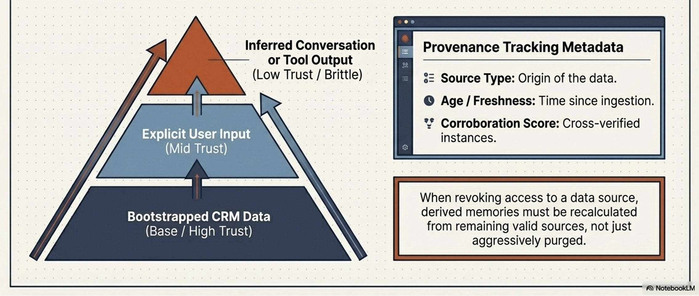
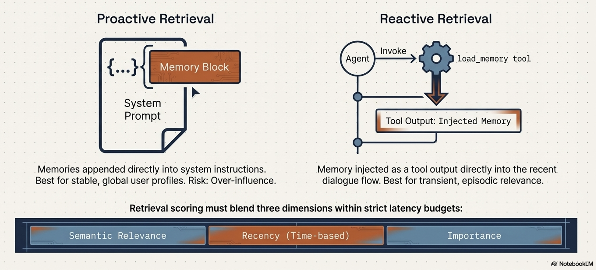

Context Engineering for Stateful AI Agents
Objectives
Understand what is context engineering and why LLMs need context engineering
Understand concepts:
Sessions
History Management & Context Compaction
Memory Architecture
Memory Lifecycle
Why LLMs need context engineering?
LLMs are inherently stateless
Possess no awareness of previous interactions unless that data is explicitly provided in each request.
By engineering the context, we transform stateless models into state-aware, intelligent agents capable of personalized reasoning and long-term continuity.
In agentic workflows, dynamic context assembly acts as the “mise en place” —the culinary discipline of gathering and preparing all high-quality ingredients and tools before execution begins. Moving from static prompts to dynamic payloads is critical for performance:
Fundamentals of Context Engineering
Context Engineering represents a strategic evolution from traditional Prompt Engineering.
Prompt engineering focuses on crafting static instructions, while Context Engineering is the architectural process of dynamically assembling and managing the entire information payload within an LLM’s context window.

Importance of Context Engineering
Tailored Payloads:
Ensures the model receives exactly the information required for a specific task, reducing noise and token waste.
Performance Optimization:
Strategic selection of data minimizes quality degradation caused by information density and attention drift.
Operational Orchestration:
Shifts the burden from hardcoded strings to dynamic systems (RAG, session stores, memory managers) that feed the agent relevant data in real-time.To manage this complexity, context is categorized into three functional tiers:
Context to Guide Reasoning:
Defines the agent’s fundamental patterns. Includes system instructions (persona), tool definitions (API schemas), and few-shot examples (in-context learning).
Evidential & Factual Data:
The substantive data the agent reasons over. Includes long-term memory , external knowledge (RAG), tool/sub-agent outputs , and Artifacts (non-textual data like images or files associated with the session).
Immediate Conversational Information:
Grounds the agent in the present task. Encompasses conversation history , user prompts , and the scratchpad/state for temporary calculations.This flow of information is orchestrated through the primary chronological container of interaction: the Session.
key components of context engineering
Sessions: Managing the Immediate Dialogue State
Context Compaction and History Management
Memory Architecture: The Engine of Long-Term Persistence
Sessions: Managing the Immediate Dialogue State
Session serves as the container for a single, continuous conversation
Strategically, it acts as the agent’s temporary “workbench,”
Hold the immediate tools, notes, and reference materials required for active reasoning
User may have multiple sessions, each remains a distinct, disconnected record to ensure focus
The atomic building blocks of a Session consist of Events and State
Events:
User Inputs: Messages from the user in various formats (text, audio, image).
Agent Responses: The replies generated by the model.
Tool Calls: The agent’s decision to trigger an external API or function.
Tool Outputs: The data returned from those external calls used to continue reasoning.
States:
The implementation of these components varies significantly by framework, influencing how state is persisted:
Feature |
ADK (Application Development Kit) |
LangGraph |
|---|---|---|
Architecture |
Uses explicit Session and Event objects. |
Uses State-as-Session . |
Storage Model |
Decoupled; history and state are distinct folders. |
An all-encompassing, mutable state object. |
History Mutation |
Generally an append-only log of events. |
Mutable; state is transformed or compacted directly. |
Persistence |
Decoupled from the model; saved to Agent Engine. |
Managed through graph logic and internal state persistence. |

Technical Note: Architects must be wary of “Framework Isolation.” Session storage often couples the database schema to the framework’s internal objects (e.g., ADK Events vs. LangGraph Messages), making conversation records non-portable. To achieve true interoperability in multi-agent systems, developers should utilize a decoupled Memory layer that stores processed, canonical information rather than raw framework-specific objects.
Context Compaction and History Management
The challenge of managing a session’s growth is best described by the “Suitcase Analogy.”
Overpacking the context window leads to high API costs, increased latency, and model confusion.
Conversely, packing too little causes the agent to lose essential context.
Success depends on carrying only what is necessary for the current “trip.
As token counts increase, performance often degrades due to noise in context
Developers employ compaction strategies to mitigate this issue

Primary context compaction strategies
Last N Turns:
A simple sliding window that keeps only recent interactions;
Efficient but risks losing “passport-level” critical info from the start.
Token-Based Truncation:
Fills the window up to a predefined limit by working backward from the most recent message.
Recursive Summarization:
Uses an LLM to condense older dialogue into a summary prefixed to verbatim messages.
This maintains density but adds LLM overhead.
Event-Based Triggers:
Triggers compaction only upon semantic task completion or topic shifts, ensuring logical continuity.
Production systems use programmatic configurations to trigger these background processes without blocking the user:
Visual explanation
Last N Turns vs Token-Based Truncation:

Recursive Summarization:

Comparison:

Trigger engines:

Production architecture:

Evolution of the context:

Coding
# Example of background summarization configuration
from google.adk.apps import App
from google.adk.apps.app import EventsCompactionConfig
app = App(
name='stateful_agent_app',
root_agent=agent,
# Trigger summarization every 5 turns, keeping 1 turn of overlap
events_compaction_config=EventsCompactionConfig(
compaction_interval=5,
overlap_size=1,
),
)
Memory Architecture: The Engine of Long-Term Persistence

Memory captures meaningful insights that transcend individual sessions.
It is the foundation for personalization and multi-agent interoperability.
Crucially, memory can solve the “Cold-Start” problem by utilizing Bootstrapped Data —pre-loading memories from internal systems like a CRM to provide a personalized experience even in a first-time interaction.
To distinguish Memory from other patterns, consider the Librarian (RAG) vs. Personal Assistant (Memory) :
Feature |
RAG (The Librarian) |
Memory (The Assistant) |
|---|---|---|
Primary Goal |
Inject global facts/external knowledge. |
Create personalized, stateful experiences. |
Data Source |
Static knowledge bases (PDFs, Wikis). |
User dialogue and behavioral observations. |
Isolation |
Generally shared across all users. |
Strictly isolated; scoped per-user. |
Read/Write |
Batch processed; retrieved as a tool. |
Event-based; extracted from active sessions. |
Categories of “Memory”
Memory is categorized by function:

Declarative Memory (“Knowing What”):
Explicit facts and events (e.g., “The user has a peanut allergy”).
Procedural Memory (“Knowing How”):
Knowledge of workflows and skills.
Procedural memories act as a reasoning “playbook.”
Procedural Memory provides Fast, dynamic Adaptation by guiding the agent via in-context learning
Unlike Fine-Tuning/RLHF , which is a slow, offline adaptation of model weights
The Memory Lifecycle: Extraction and Consolidation
Visual explanation
Memory generation is an autonomous, LLM-driven ETL (Extract, Transform, Load) pipeline:
 The Pipeline Stages:
The Pipeline Stages:
Ingestion: Collecting raw dialogue or multimodal data.
Nuance: Systems distinguish between Memory FROM a multimodal source (textual insight extracted from a voice memo) and Memory WITH multimodal content (storing the binary image/audio itself).
Extraction & Filtering: Identifying “meaningful” content via topic definitions.
Consolidation: The “Self-Curation” phase where the LLM Merges updates, Updates nuances, or Deletes invalidated data (e.g., if a user changes their preference).
Storage: Persistence to Vector Databases or Knowledge Graphs.
Automation is the core:

Automation is the core differentiator here
System uses reasoning to curate the knowledge base rather than simply storing every turn.
Memory Provenance and the Hierarchy of Trust
A memory’s reliability is derived from its origin
Systems must track:
Bootstrapped Data: (CRM/Internal) - High Trust.
User Input: (Explicit forms vs. implicit inference) - Medium to High Trust.
Tool Output: (API returns) - Low Trust; often brittle or stale.
In the event of contradictions, the Hierarchy of Trust dictates that high-trust bootstrapped data or explicit user commands override implicit inferences.

Strategic context injection
Strategic context injection in Memory Retrieval and Inference Strategies:
The final, critical step after memory retrieval
Selected memories are placed into the model’s context window
Strategic context injection
significantly influences LLM’s reasoning,
affects operational costs, and
ultimately determines the quality of the final answer
Strategies for injecting memory into inference process
Appending to System Instructions
Appending retrieved memories directly to the system prompt
Injecting into Conversation History
Retrieved memories are injected directly into the turn-by-turn dialogue, either before the full history, right before the latest user query, or via tool call outputs.
The Hybrid Strategy
Often the most effective** in practice
Using the system prompt for stable, global memories that should always be present, while reserving dialogue injection or memory tools for transient, episodic memories relevant only to the immediate moment.
This successfully balances persistent context with the flexibility of in-the-moment retrieval
Injecting Confidence Scores for Nuanced Reasoning
Strategic context injection also involves managing the model’s trust in the information. Rather than simply presenting facts to the user, memories and their dynamic confidence scores are injected directly into the system prompt. This allows the LLM to internally assess the reliability of the information, weigh the evidence, and make more nuanced, trustworthy decisions during inference.
Retrieval must balance utility against strict latency budgets.
Advanced systems use multi-dimensional scoring:
Relevance: Semantic similarity.
Recency: Time-based decay.
Importance: Inherent significance, often assigned at generation-time
To improve accuracy, architects utilize
Query Rewriting (disambiguating user prompts) and
Reranking (using a more expensive LLM to re-evaluate the top candidate memories).
